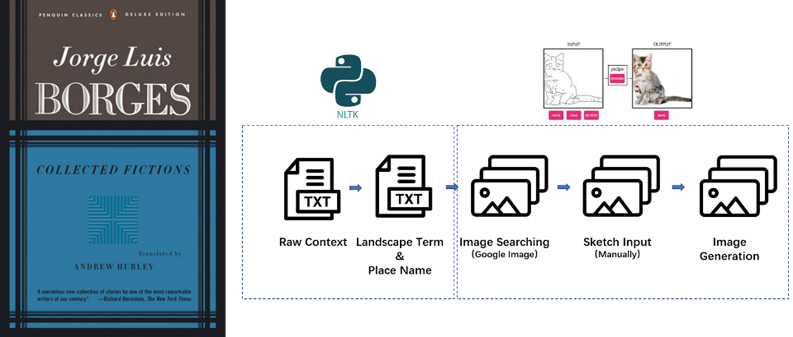
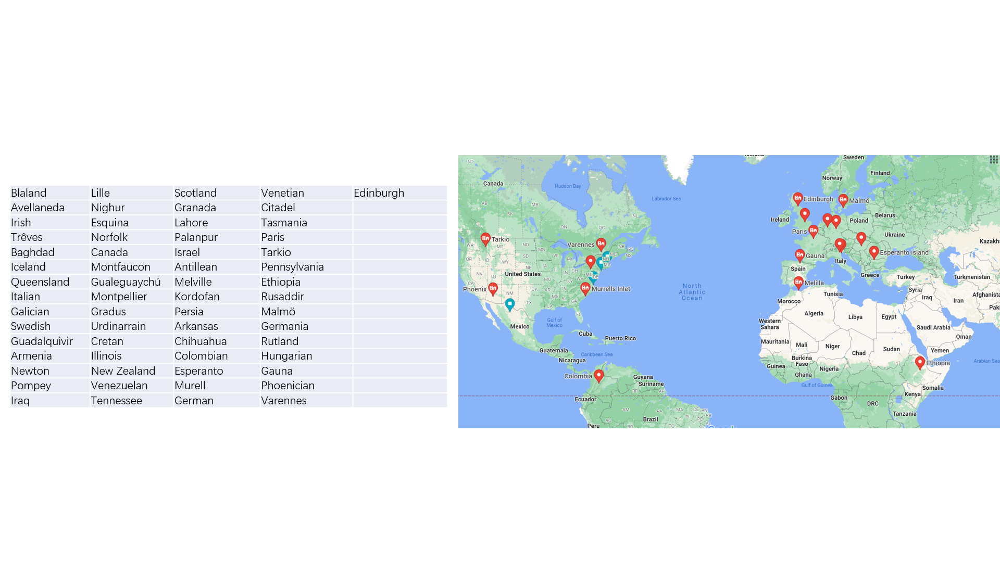

|
Fantasy to Illustration -Visualization of Fantasy Geographic Landscape in Borges’s Fictions- Boya Zhou
Final project for the MIT class
4.550/4.570
Computation Design Lab |
|
|  |
Overview
Borges was born in Argentina, while his work includes detailed imagination of places all over the world.
|
Project Overview
Both artificial while designed by human consciousness, which is influenced by both personal experience and cultural context. Can we design a new kind of landscape from the inspiration of text?
Can AI go beyond personal bias?
|
||
|  |
Fig 1. 61 Real Placenames |

|
Fig 2. Landscape term dictionary to Lexical Dispersion Plot |

|
Fig 3. Image Selection for color coding |

|
Fig 4. Sketches from different readers for Output Illustration |
|
Future Development
1. Precision of Scale: test with color coding images from digital 3d model
|
2013 All rights reserved. Last modified: Jan. 30, 2014 by TN